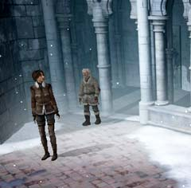

| 概要 | 地図 |
| 淡いヒント集 | ヒント集 | 的確なヒント集 |
| 攻略最短ルート |
| 場所選択に戻る |
修道院
|
脱出するために
ハンスの意識を戻しても、そう簡単にロマンスバーグに戻ることはできない。なぜならば、修道院たちはハンスを殺そうと考えているからだ。 それでは、彼らに見つからずにハンスを脱出するにはどうしたらよいか? ・ロウソクを使い、ハンスを目覚めさせる ・修道院の鐘をならす ・墓地で脱出方法を探る ・実際に脱出する 
・ロウソクができたならば、ハンスを目覚めさせよう。 ・ロウソクに火を付けるにはどうすればよいか? ・ロウソクを置くには何を使えばよいか?

・鐘をならさなくては、修道士たちの目を盗んでの脱出はできない。 ・鐘はどこにあるのか? ・まだ入ったことのない扉はなかっただろうか? ・脱出するにはどうすればよいか? ・墓地の壁は一カ所崩れている。ここをうまく使えないだろうか。 ・脱出準備ができたらハンスの元へ行こう。
| << 前へ |
|
| 場所選択に戻る |
| 概要 | 地図 |
| 淡いヒント集 | ヒント集 | 的確なヒント集 |
| 攻略最短ルート |
Syberia II
| 目次へ戻る | ページの上部へ |